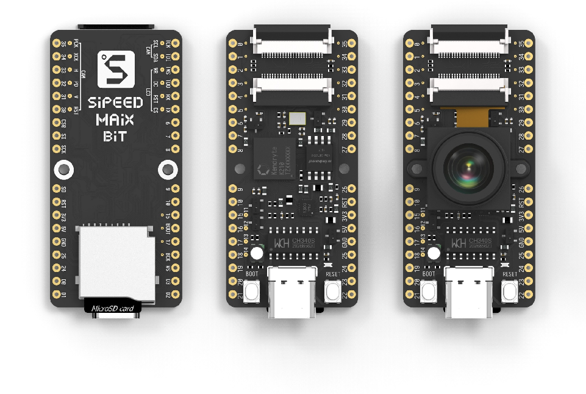

Maix Bit

The Maix Bit development board.
The Maix Bit is a RISC-V AI IoT development board.
Features
K210 RISC-V AI Chip
Dual-core
Independent FPU
64-bit
8MB on-chip SRAM
Double precision FPU with multiplication, division and square root
Warning
There is currently no support for the FPU, or RISC-V User mode. Peripherals such as GPIO, SPI and I2C are also currently unsupported.
Todo
If you are interested in using this board, please consider contributing implementations for the above missing features.
Installation
Download and install toolchain and openocd-k210
$ curl https://static.dev.sifive.com/dev-tools/riscv64-unknown-elf-gcc-8.3.0-2019.08.0-x86_64-linux-ubuntu14.tar.gz $ export PATH=$PATH:/$TOOL_CHAIN_PATH/bin
Build openocd-k210
$ git clone https://github.com/kendryte/openocd-kendryte $ cd openocd-kendryte $ ./bootstrap & ./configure & make
Flashing
Download and run NuttX from SRAM (not SPI-Flash):
$ picocom -b 115200 /dev/ttyUSB0
$ sudo ./src/openocd -s ./tcl -f ./tcl/kendryte.cfg -m 0
$ riscv64-unknown-elf-gdb ./nuttx
(gdb) target extended-remote :3333
(gdb) load nuttx
(gdb) c
Write nuttx.bin to SPI-Flash:
$ pip3 install kflash
$ kflash -p /dev/ttyUSB0 -b 1500000 ./nuttx/nuttx.bin
Note
The kflash_gui is not recommended because it’s unstable.
Configurations
Configurations can be selected using the following configure tool command:
$ ./tools/configure.sh maix-bit:<config>
Where <config> can be replaced by the name of any configuration listed
below.
nsh
A simple configuration with NSH running.